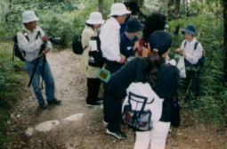
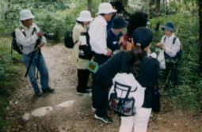

((季節は秋、きのこや植物・昆虫などの観察をしながらの観察会です))
|
アサギマダラの観察会の紹介…1999年度 |
|---|
午前9時半に集合し簡単な説明の後出発の予定でしたが、いつものように説明が長くなり10時半近くの出発になりました。

((季節は秋、きのこや植物・昆虫などの観察をしながらの観察会です))
((この日に観察できた「きのこ」については、2～3日中に「きのこ図鑑…1999年10月五月山」を作成する予定です))
最初にアサギマダラが目撃できたのは、ひょうたん島の手前でした。午前11時30分、先を進んでいた子ども達が、「アサギマダラがいた。逃げられた。」と言ったので走って行くと遠くの方をゆったりと飛んでいるものを目撃することができました。この場所は、アサギマダラだけでなく、ワシ・タカの仲間の移動の観察にも適した場所です。
その後、市民の森に向かう林床のコースをたどりました。11時50分、1匹のアサギマダラがゆったりと飛んだり、葉に止まったりするようすを時間をかけて観察することができました。♀(メス)でした。

12時5分には、2匹のアサギマダラが姿を見せてくれました。15分にも2匹が…。25分に1匹、30分に2匹と次々と姿をあらわしました。市民の森に着いたのは40分になってしまいましたが、ここでは4匹を観察できました。ヒヨドリバナで吸蜜をするもの、クモの巣にひっかかっているものなど移動中の生活のようすがよく分かりました。採集をして♂(オス)と♀(メス)の確認をして放ちました。その後、48分に1匹、51分に1匹が目撃されました。


一般の方の観察会はここで終了しましたが、山の家への帰路で吸蜜中のものなどを2匹目撃できました。

スタッフの一部が市民の森周辺に残り観察を続けたところ、午後1時25分に1匹、33～38分の5分間に5匹を観察することができました。
最近は、ヒヨドリバナがはえている場所に道ができるなどの影響で吸蜜中のアサギマタラを目撃するのが激減しましたが、今回は比較的多くのアサギマダラが観察できて満足のできる観察会になりました。のべ(同じ個体を目撃している可能性がありますので)23匹の目撃でした。マーキングされたものは見つけられませんでしたが来年度からは、会でもマーキングをしようと考えています。